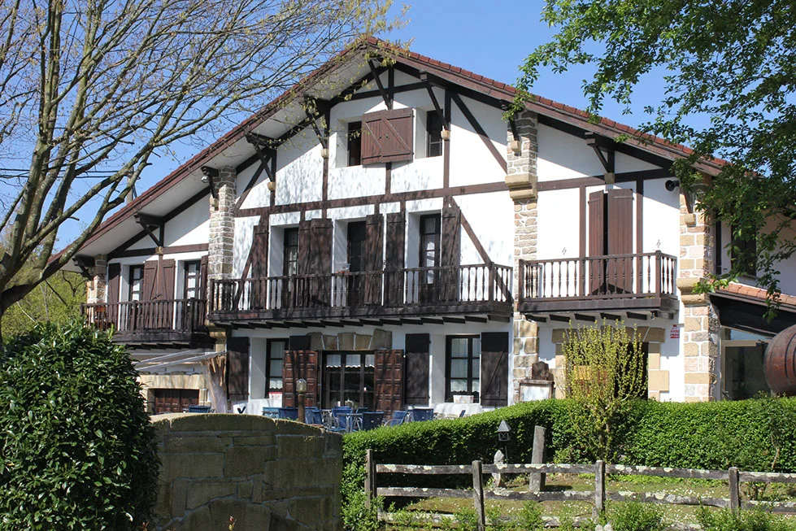
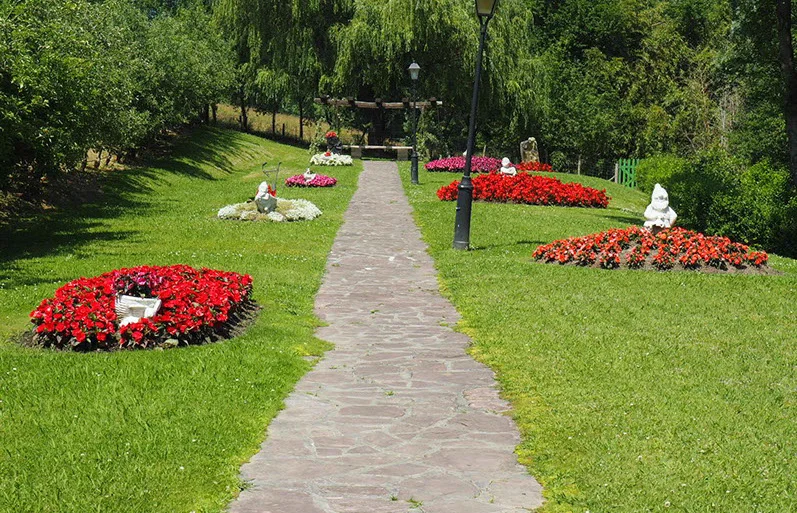
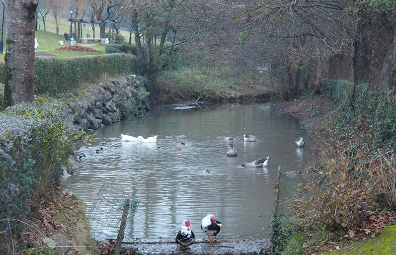

Para comer
Carta y menús
Parrilla, pescados frescos y mariscos, y menú del día desde 35 €.
Ver la cartaMuestra preparada por OI Studio para Beko Errota, con los datos y fotos de su web. Sin compromiso.



El molino · desde los años 80
A comienzos de los años 80 la familia reformó un viejo molino del barrio Jaizubia, y desde entonces no ha parado de renovarlo. Más de cuarenta años de trayectoria, y alrededor el jardín, los viñedos y los olivos de los que salen su txakoli, su sidra y su aceite.

De nuestra tierra a la mesa
Parrilla, pescados frescos y mariscos, y menú del día desde 35 €.
Ver la carta

Pescados frescos, carnes selectas y verduras de temporada: algunos de los platos de la casa.


Estanque, fuentes, caminos de piedra y flores: el sitio donde empieza cualquier celebración.



Mesa, grupo, boda o evento: lo hablamos por teléfono y os respondemos al momento.
943 64 31 94 O por correo: bekoerrota@bekoerrota.com